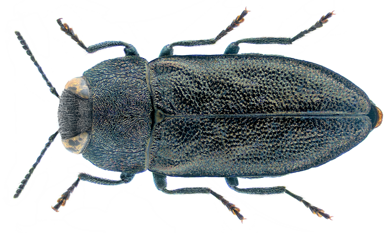

Contenidos
Anthaxia
Anthaxia es un género de escarabajos de la familia BuprestidaeHay más de 700 especies distribuidas por todo el mundo, excepto Australasia
Ejemplares del género
Especies
- Anthaxia abdita Bílý, 1982 Anthaxia abyssinica Théry, 1896 Anthaxia
- acaciae Fisher, 1935 Anthaxia acutangula Motschulsky, 1861 Anthaxia
- acutipennis Bílý, 2010 Anthaxia adenensis Bílý, 1973 Anthaxia
- adiyamana Svoboda, 1994 Anthaxia aenea Gory & Laporte, 1839 Anthaxia
- aeneocuprea Kerremans, 1913 Anthaxia aeneogaster Gory & Laporte, 1839
- Anthaxia aeneopicea Kerremans, 1900 Anthaxia aenescens Casey, 1884
- Anthaxia aethiopica Bílý, 2020
Referencias
- Anthaxia A Checklist of World Buprestoidea. Consultado el 7 de enero de 2022.
- Bugguide.net. Anthaxia
- Baiocchi, Daniele. (2011). "Three new species of Anthaxia Eschscholtz, 1829 from Iran (Coleoptera: Buprestidae)." Zootaxa 2932: 1-23.
- Baiocchi, Daniele (2013). «The Anthaxia (Anthaxia) manca (Linnaeus, 1767) species-group in Iran, with description of a new species and a new synonymy (Coleoptera: Buprestidae)». Zootaxa 3613 (5): 455-481.
Bibliografía
- Dourlot S., Petite collection d'insectes de nos régions, éd. Larousse 2008, Paris (ISBN 978-2-03-583816-2)
Enlaces Externos
- Anthaxia Global Biodiversity Information Facility.